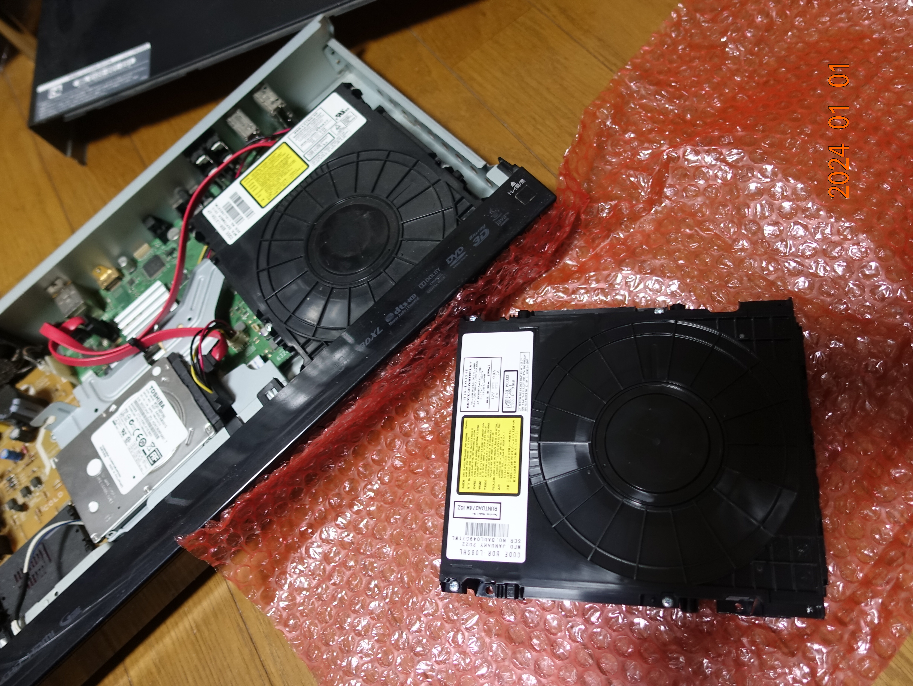

今年は喪中なのでお正月らしい事はお年玉を配る程度の事しかしていないが、壊れていたレコーダの光学ドライブを新調したりしたので、これで溜まっていた分をダビングする事ができる。
このレコーダも結構長い間使っているわけだが。
チューナの数にも不満があったわけで、年内にもレコーダを新調したい所ではある。
今年のカレンダーは「Noぱんつ卓上スクールカレンダー」と「乳暦カレンダー」が手元にあるわけだが、如何せん「乳暦カレンダー」の絵柄がそんなにお好みではない故に「Noぱんつ」で決まりかなと思っているわけだが、こちらは4月以降しかないのだからこれはこれで困りもの。
そもそもカレンダーなんてのは季節や暦などを少しでも感じ、一つの文化として楽しむ為に使っているだけで特に必要というわけでもないので指して問題ではないだけれども。
まぁ、今年も程々に頑張ろうと思う。
